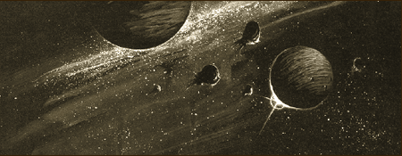
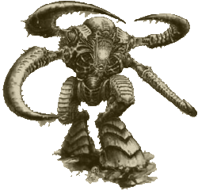
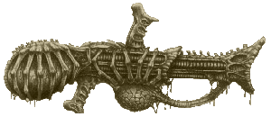

| |
A Behemoth Tyranida Kaptárflotta
hiteles története
Elsõ rész

"Túl az emberlakta
galaxison, ahová sem az ûrhajók, sem az
astrotelepátia sugarai nem juthatnak el, az
intergalaktikus semmi jeges hidege az úr. Néhányan
elmerészkedtek arra a vidékre, és nyomuk
veszett. Ez a korlát, mely elválasztja a
galaxisokat. Ez a hely, ahol az ûr és az idõ összeesküszik,
és távol tartja egymástól a galaxisokat, elképzelhetetlenül
távol."
Íme álljon hát itt Császárunk
kegyelmébõl az elsõ Tyranida háborúk hiteles
története.
Az emberiség vak. Semmit sem sejtett a
létét fenyegetõ veszedelemrõl, amikor az
idegen faj inváziója megkezdõdött. Persze nem
volt látványos támadás vagy ütközet, ami
jelezte volna a tyranida kaptárflotta érkezését,
mivel nem voltak fontos, emberlakta települések
az áldozatul esett bolygókon. Az elsõ olyan
nyom, amely gyanút kelthetett volna, néhány
titokzatos körülmények között elpusztult
bolygóról szóló jelentés volt, melyeket az
Adeptus Mechanikus kutató expedíciói küldtek a
Galaxis keleti peremvidékérõl. Ezek némelyikén
az élet alig volt magasabb szintû, mint az évmilliókkal
ezelõtti földi õstengerekben, míg más világokon
az élõlények már a törzsfejlõdés kezdeti
szakaszába léptek. Ebben az idõszakban az
Adeptus Mechanikus kutatói több mint háromszázezer
életforma pusztulását regisztrálták a délkeleti
peremvidéken.
Bár a kutatók rengeteg adatot
halmoztak fel a jelenséggel kapcsolatban, mégsem
tudták okát adni annak. Azt a lehetõséget,
hogy az égitestek letértek volna a pályájukról
vagy nagyobb meteoritokkal ütköztek, szinte
azonnal kizárták, mint ahogy a naptevékenységben
beállt változásokat is. Úgy látszott nincs ésszerû
magyarázat, ezért az összegyûjtött adatokat
elküldték az Administratum kutatási fõnökének.
További intézkedések azonban nem történtek.
Egy több milliárd világot számláló
galaxisban elõfordulnak titokzatos dolgok, sõt túl
szokványosak ahhoz, hogy az Administratum
mindegyikükkel foglalkozzon. A birodalmi érdekeltségeket
nem fenyegette veszély, ráadásul a kérdéses
területek több ezer fényévnyire voltak az elsõ
emberek által lakott településektõl. Az információk
tehát az Administratum adatbankjába kerültek a
földre.
Így esett, hogy az egyetlen olyan adat,
mely az éles szemûeket figyelmeztethette volna a
közelgõ veszélyre, elvesztek a bürokrácia útvesztõiben.
Az elpusztult világokról szóló
jelentések az évek során egyre csak érkeztek,
míg végül olyan nagy lett a mennyiségük, hogy
felkeltették az Inkvizíció érdeklõdését.
Kryptman inkvizítor, aki a Macharian-eretnekség
baljóslatú tanításainak az értelmezésén fáradozott,
felfigyelt a jelenségre, és kérdezõsködni
kezdett a kutatási hivatalnál, hogy további
információkhoz jusson. Az adeptusok azonban
meglehetõsen kevés adattal szolgálhattak.
Az inkvizítor összegyûjtötte hát a
bolygók pusztulásáról szóló jelentéseket,
és tanulmányozni kezdte õket. Hamarosan világossá
vált számára, hogy a folyamat bizonyos rendszer
szerint történik, és a délkeleti peremvidék
fokozatosan elhal. Úgy tûnt, hogy a pusztulási
folyamat a galaxis széle felõl indul és a közepe
felé tart. Mivel a jelentések rendszertelen idõközönként
érkeztek, nehéz volt következtetni a folyamat
sebességére, de valószínûnek látszott, hogy
elõbb vagy utóbb birodalmi érdekeltségek is
veszélybe kerülnek. Kryptman inkvizítor tehát
rájött, hogy a világok titokzatos pusztulása
összefügg, azt azonban még nem tudta, hogy mi módon.
Értesítette eredményeirõl az Inkvizíció tanácsát,
majd azonnal elindult a délkeleti peremvidékre,
hogy több információt gyûjtsön.
A Tyran bolygó a legtöbb vonatkozásban
jelentéktelen világ volt. A felszín 80%-át óceánok
borították, a szárazföldet mindössze pár szétszórt
sziget képviselte, amik valójában alig voltak
nagyobbak néhány, a fenékrõl feltörõ hegycsúcsnál.
A Nagy Óceán élõvilága roppant változatos
volt, mindenfajta élõlényt meg lehetett találni
benne a koralloktól a kagylókon át az óriás
tintahal-szerû teremtményekig. A bolygó egy körülbelül
négyszáz lelket számláló Adeptus Mechanikus
kutató bázisnak adott otthont, a Tyran Primusnak,
ahonnan három-négy hónaponként indultak expedíciók
a délkeleti perem ismeretlen körzeteibe.
A közelgõ katasztrófa elsõ jele egy
több ezer azonosítatlan tárgyból álló felhõ
felfedezése volt, amely a Tyran rendszer szélén
tûnt fel. A letapogató berendezésekkel és távolságmérõkkel
végzett kutatás nem vezetett eredményre, de
annyi bebizonyosodott, hogy a tárgyak nem sugároznak
ki energiát vagy jelzéseket magukból. Nem
tartalmaztak fém alkotóelemeket és az alakjuk
is szabálytalan volt, ezért lehetetlennek tûnt,
hogy ûrhajókból álló flotta vagy hajóroncsok
sodródtak volna a rendszerbe.
| A lehetséges megoldásokon rengeteget
vitatkoztak a bázison élõ tech-papok. Egyesek
felrobbant bolygók után maradó törmelékhalmazról
beszéltek, aszteroidák- ról, meteorfelhõrõl és
más természeti jelenségekrõl, míg mások
hiperûri viharokra és ezek által a galaxisba
sodort tárgyakra gyanakodtak. Ezt látszott alátámasz-
tani
az is, hogy a bázis astropatája szerint egyre erõsö-
dõ
zavar keletkezett a hiperûrben, már hetekkel a
felhõ megérkezése elõtt. Amióta a felhõ
megjelent a Tyran rendszer határán, rémálmok
gyötörték. Az elméjét betöltötte valami
iszonyatos, halkan suttogó dolog jelenléte. Az
astropata idegeit teljesen kikezdték az immár
nappal is jelentkezõ hallucinációk, gyakran |
 |
|
| összefüggéstelenül
beszélt, de talán a jövõbe látott, mikor a bázis
pusztulását jósolta. |
Az állomás parancsnoka, Magos Varnak
nem nagyon hitt az astropata sötét jövendöléseiben.
Mégis, mivel a feladatköréhez tartozott a
szokatlan jelenségek vizsgálata, elõkészített
egy hajót, és elindult, hogy személyesen vizsgálja
meg a felhõt, amely már a rendszer legszélsõ
bolygólyánál járt. A parancsnok hajója több
hetes utazás után közelítette meg az
ismeretlen tárgyakat. Az ûrben sodródó,
mozdulatlannak tûnõ testek teljesen betöltötték
az ûrnek azt a kicsiny szegletét, amelyet a hajó
legénysége az optikai érzékelõkkel be tudott
fogni. Megdöbbentõen hatalmasak voltak. A hajó
szinte eltörpült még a legkisebbek mellett is,
amelyek valamiféle rendszer szerint vették körül
a nagyobbakat. A parancsnok a legközelebbi
alakzat irányába kormányozta hajóját, hogy közelebbrõl
folytathassa a vizsgálódást. Az objektum
semmilyen eddig látott formára nem emlékeztetett,
bár hosszú vizsgálódás után fel lehetett
fedezni benne némi nyers arányosságot. Bordázott
felületén az érzékelõk erõs nagyítás
mellett, hártyaszerû alakzatokat mutattak,
amelyek a távoli nap irányába fordultak. Az egész
olyan benyomást keltett, mintha egy ûrben sodródó
aszteroida lenne, amely maga határozza meg az útirányát.
Varnak nem folytathatta sokáig a vizsgálódást,
mivel több kis test elvált a legközelebbi nagy
alakzattól, és egyre közeledett a kutatóhajó
felé. A parancsnok veszélyt érezve megfordította
a jármûvet és távolodni kezdett a tárgyaktól.
Manõverezés közben megpróbált fény és rádiójelzések
útján kapcsolatba lépni velük. Semmi változás
vagy jelzés nem volt látható vagy kimutatható
hacsak az nem, hogy a közeledõk felgyorsultak. Kétségbeesésében
Varnak begyújtotta a hajó hajtómûveit, hogy
kitörjön az egyre szoruló hurokból. Ahogy a jármû
az egyik tárgy közelébe ért, az azonnal
felrobbant, és hatalmas károkat okozott. A legénység
több tagja meghalt, a hajótest súlyosan megrongálódott,
és Magos Varnak megsebesült. Menekülés közben
a hajó még több sérülést is elszenvedett, de
szerencsére a hajtómûvei épek maradtak, így
folytathatta útját a Tyran felé. A parancsnok végül
visszavezette a hajót a bolygóra, és kényszerleszállást
hajtott végre a bázis közelében. Amikor késõbb
megvizsgálták a hajótest maradványait, kiderült,
hogy a hajót különbözõ savak találták el,
és legalább a 20%-át elmarták.
A felhõ közeledése ezután
felgyorsult, és a kutatók szerint csak hetek kérdése
volt, hogy elérjék a Tyrant. A savakról,
amelyekkel az ellenség támadott,
bebizonyosodott, hogy élõ szervezetekbõl származnak.
Bármilyen hihetetlennek is látszott, úgy tûnt,
hogy a felhõt soha nem látott idegen élõlények
alkotják, akik képesek arra, hogy a légüres térben
létezzenek. Ekkor felvetõdött a kérdés: mit
fognak csinálni az idegen lények, ha elérik a
Tyrant? Ugyanis, ha a légüres tér a lételemük,
képtelenek lesznek leszállni a bolygó felszínére,
hiszen a nyomás következtében azonnal szétrobbannának.
És ha ezek a lények pusztították el a többi
bolygót is, vajon a Tyran is erre a sorsra jut-e?
Magos Varnak nem kockáztathatott, megerõsíttette
a bázist, a kutatóhajókra fegyvereket
szereltetett, és készenlétbe helyezte a védelmi
rendszert.
Egy hét múlva megkezdõdtek a támadások.
Amint a bolygó felé közelítõ lények lõtávolságon
belülre értek, a védelmi rendszer ágyúi bemérték
és lõni kezdték õket. Az elsõ néhány test
szénné égett a lézerágyúk perzselõ sugárnyalábjainak
tüzében, de az áradatot nem lehetett sokáig
feltartani. Hamarosan több idegen lény elég közel
került a bolygóhoz és nagy sebességû tárgyakkal
kezdte bombázni az erõdöt. A talajon szétrobbanó
testekbõl sav fröccsent szerte, ugyanaz a sav,
amely kis híján végzett Magos Varnak hajójával.
A védelmi rendszer szinte teljesen megsemmisült,
az ûrben harcoló hajók közül csak három
maradt épségben, amikor néhány órás tûzpárbaj
után úgy látszott, hogy az ellenség
visszavonul. Amikor már kívül kerültek az ágyúk
lõtávolságán, Varnak parancsot adott, hogy
ezek a hajók kövessék õket ameddig lehet. Még
két élõlény lett az enyészet martalékává.
Felrobbanó testük savval borította be az õket
elpusztító emberek hajóit, egyiküket azonnal
hasznavehetetlen ronccsá olvasztva. A másik két
hajó visszatért a Tyran Primusra, ahol
tech-papok fohászai és ráolvasásai ellenére
megszûntek mûködni.
A hajók utolsó jelentései szerint a tárgyak
minden kétséget kizáróan szerves
anyagból voltak. Élõ szervezetek, testüket kõszerû
páncélzat borította, mely leginkább csontokra
vagy a rovarok kitinpáncéljára emlékeztetett.
A hajók pusztulásával a Tyran
Primuson élõ emberek sorsa megpecsételõdött:
nem volt mivel elmenekülniük egy újabb támadás
esetén. Márpedig a támadók közeledtek. Az
idegenek jelenléte ismét óriási zavart okozott
a hiperûrben, ezért teljesen lehetetlenné vált
az astrotelepátia használata. A bázis el volt vágva
a Földtõl. Ha nem is remélhettek segítséget,
legalább figyelmeztetni tudták volna az emberiséget.
Magos Varnak az idegen lényekrõl összegyûjtött
információkat egy adattárolóba zárta és
bedobta az óceánba.
A tárolót több, mint egy évvel késõbb
találta meg Kryptman inkvizítor. A Tyran ekkorra
már halott, kiszáradt bolygó volt, az ûr végtelenjét
járó szikladarab. Errõl a világról, ahol elõször
szembesült az emberiség az idegenek pusztításával,
nevezték el késõbb az új fajt Tyranidáknak.
Amikor Kryptman inkvizítor elérte a
galaxis délkeleti peremvidékét, a Tyran által
leadott utolsó üzenetek már több hónaposak
voltak. Akkor még senki nem hozta összefüggésbe
a Tyran elleni támadást az eddig felfedezett kopár
világokkal. Mégis Kryptman talán megsejtett
valamit, amikor a Tyran felé módosította hajója
útvonalát. Mivel a Tyran elleni támadás már
megtörtént, mégpedig Kryptman számításai
szerint nem is túl rég, az a gondolata támadt,
hogy esetleg követhetné a tyranida flotta útvonalát.
Talán sikerül az útirányukra vonatkozólag
valami nyomot találni, hogy jelenthesse a Tanácsnak.
Jóslása szerint a felhõ galaktikus délkelet
felõl északnyugat felé tart. Ennek tudatában
az inkvizítor még egyszer megpróbálta követni
a Tyranidák nyomát. A jármû át- meg átszelte
a Kryptman által kiszámított pályát, de az
elkövetkezendõ pár hónap során nem akadt a
flotta nyomára. Így aztán Kryptman
visszafordult a Tyran rendszerbe, hogy megvizsgálja
mi történt az állomással és a bolygóval.
Amikor az ûrhajó a Tyran rendszerbe érkezett,
az érzékelõk képtelenek voltak a tengerrel borított
bolygó nyomára bukkanni. Volt ugyan egy bolygó,
amelyik a Tyran lehetett volna, de az valamivel
kisebb volt annál, a tengereknek nyoma sem volt,
az égitest valójában alig volt több egy kopár
aszteroidánál. Viszont közelebb érve a hajó
gyenge jelzést fogott, amelyet egy mélyen a
felszín alá temetett birodalmi jeladó sugárzott
ki az ûrbe. Kryptman inkvizítor a legénység néhány
tagjával leereszkedett a bolygóra. Vizsgálódásai
során kiderült, hogy a bolygó felszínét borító
por helyenként igen nagy mennyiségû fémet
tartalmaz. Mint késõbb kiderült, mindössze
ennyi maradt a Tyran Primus bázisból. A
detektorok szerint a jelzéseket sugárzó adattároló
körülbelül ezer méter mélyen feküdt. Az ásáshoz
nem volt megfelelõ felszerelés, ezért Kryptman
leszereltette a hajó egyik lézerágyúját, és
az azzal megolvasztott, majd megszilárdult
anyagban a legénység belekezdett a hosszú,
keserves alagútásásba. Az emberek naponta
tizenhat órát dolgoztak a meleg, kényelmetlen védõöltözetekben,
és gyakran csak az inkvizítor megszállottsága
tartotta bennük a lelket. Kryptman maga is
kivette a részét a munkából, mert biztos volt
benne, hogy a felszín alatt valami igazán
fontosnak kell lennie, valami olyan információnak,
ami az egész emberiség sorsát döntheti el. Végül
kéthavi ásás után leereszkedett az alagútba,
és felszínre hozta az adatkódexet, melyet egy
évvel korábban rejtett el Magos Varnak.

“Mégis a semmi nem
üres többé. Egy felbecsülhetetlenül õsi,
engesztelhetetlen intelligencia hasítja át a
hideget és a sötétséget. Rengeteg idegen szem
figyeli galaxisunk csillogó fényeit. Még távoli
fényeit. A Mindent Elnyelõ közeleg, húsunkra
áhítozva. Ez a nagy szervezet, ez a hatalmas
entitás a Tyranida faj.”
írta: Gabesz (Troll magazin,
2. évf. 10. szám)
|
|